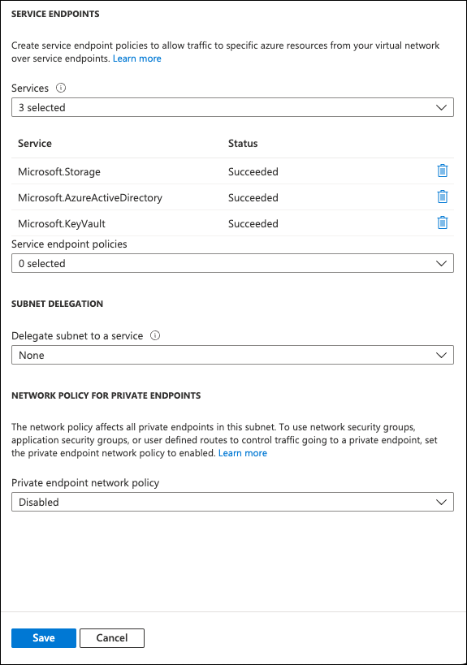

Note di rilascio
Note di rilascio
Gestisci le chiavi con Azure Key Vault
 Suggerisci modifiche
Suggerisci modifiche
È possibile utilizzare "Azure Key Vault (AKV)" Per proteggere le chiavi di crittografia ONTAP in un’applicazione implementata da Azure.
AKV può essere utilizzato per proteggere "Chiavi NetApp Volume Encryption (NVE)" Solo per SVM di dati.
La gestione delle chiavi con AKV può essere abilitata con la CLI o l’API REST ONTAP.
Quando si utilizza AKV, tenere presente che per impostazione predefinita viene utilizzata una LIF SVM di dati per comunicare con l’endpoint di gestione delle chiavi cloud. Una rete di gestione dei nodi viene utilizzata per comunicare con i servizi di autenticazione del provider cloud (login.microsoftonline.com). Se la rete del cluster non è configurata correttamente, il cluster non utilizzerà correttamente il servizio di gestione delle chiavi.
-
Cloud Volumes ONTAP deve eseguire la versione 9.10.1 o successiva
-
Licenza di crittografia dei volumi (VE) installata (la licenza di crittografia dei volumi NetApp viene installata automaticamente su ogni sistema Cloud Volumes ONTAP registrato presso il supporto NetApp)
-
È necessario disporre di una licenza per la gestione delle chiavi di crittografia multi-tenant (MT_EK_MGMT)
-
Devi essere un amministratore del cluster o di SVM
-
Un abbonamento Active Azure
-
AKV può essere configurato solo su una SVM dati
Processo di configurazione
I passaggi descritti spiegano come registrare la configurazione di Cloud Volumes ONTAP con Azure e come creare un archivio chiavi Azure. Se la procedura è già stata completata, assicurarsi di disporre delle impostazioni di configurazione corrette, in particolare nella sezione Creare un vault Azure Key, quindi passare a. Configurazione di Cloud Volumes ONTAP.
-
È necessario prima registrare l’applicazione nell’abbonamento Azure che si desidera utilizzare per accedere al vault delle chiavi Cloud Volumes ONTAP. All’interno del portale Azure, selezionare registrazioni app.
-
Selezionare Nuova registrazione.
-
Fornire un nome per l’applicazione e selezionare un tipo di applicazione supportato. Il tenant singolo predefinito è sufficiente per l’utilizzo di Azure Key Vault. Selezionare Registra.
-
Nella finestra Panoramica di Azure, selezionare l’applicazione registrata. Copiare l’ID applicazione (client) e l’ID directory (tenant) in una posizione sicura. Saranno richiesti più avanti nel processo di registrazione.
-
Nel portale Azure per la registrazione dell’applicazione Azure Key Vault, seleziona il pannello certificati e segreti.
-
Selezionare nuovo segreto client. Immettere un nome significativo per il client secret. NetApp consiglia un periodo di scadenza di 24 mesi; tuttavia, le policy di governance del cloud specifiche potrebbero richiedere un’impostazione diversa.
-
Fare clic su Aggiungi per creare il segreto del client. Copiare la stringa segreta elencata nella colonna valore e memorizzarla in una posizione sicura per utilizzarla successivamente in Configurazione di Cloud Volumes ONTAP. Il valore segreto non viene visualizzato di nuovo dopo aver allontanato la pagina.
-
Se si dispone già di un vault delle chiavi Azure, è possibile collegarlo alla configurazione di Cloud Volumes ONTAP; tuttavia, è necessario adattare i criteri di accesso alle impostazioni in questo processo.
-
Nel portale Azure, accedere alla sezione Vaults chiave.
-
Fare clic su +Crea e inserire le informazioni richieste, tra cui gruppo di risorse, regione e livello di prezzo. Inoltre, immettere il numero di giorni per conservare i vault cancellati e selezionare Enable purge Protection (attiva protezione di eliminazione) nel vault delle chiavi.
-
Selezionare Avanti per scegliere una policy di accesso.
-
Selezionare le seguenti opzioni:
-
In Configurazione Access, selezionare criterio di accesso al vault.
-
In accesso alle risorse, selezionare crittografia disco Azure per la crittografia del volume.
-
-
Selezionare +Crea per aggiungere una policy di accesso.
-
In Configura da un modello, fare clic sul menu a discesa, quindi selezionare il modello Gestione chiavi, segreti e certificati.
-
Scegliere ciascuno dei menu a discesa delle autorizzazioni (chiave, segreto, certificato), quindi Seleziona tutto nella parte superiore dell’elenco dei menu per selezionare tutte le autorizzazioni disponibili. Dovresti avere:
-
Permessi chiave: 20 selezionato
-
Permessi segreti: 8 selezionati
-
Permessi del certificato: 16 selezionato

-
-
Fare clic su Avanti per selezionare l’applicazione registrata Principal Azure in cui è stata creata Registrazione dell’applicazione Azure. Selezionare Avanti.

È possibile assegnare un solo principal per policy. 
-
Fare clic su Avanti due volte fino a visualizzare Rivedi e crea. Quindi, fare clic su Crea.
-
Selezionare Avanti per passare alle opzioni rete.
-
Scegliere il metodo di accesso alla rete appropriato o selezionare tutte le reti e Rivedi + Crea per creare il vault delle chiavi. (Il metodo di accesso alla rete può essere prescritto da una policy di governance o dal tuo team di sicurezza del cloud aziendale).
-
Registrare l’URI del vault delle chiavi: Nel vault delle chiavi creato, accedere al menu Overview (Panoramica) e copiare l’URI del vault** dalla colonna di destra. Questo è necessario per un passaggio successivo.
-
Nel menu del vault delle chiavi creato per Cloud Volumes ONTAP, selezionare l’opzione chiavi.
-
Selezionare genera/importa per creare una nuova chiave.
-
Lasciare l’opzione predefinita impostata su genera.
-
Fornire le seguenti informazioni:
-
Nome della chiave di crittografia
-
Tipo di chiave: RSA
-
Dimensione chiave RSA: 2048
-
Attivato: Sì
-
-
Selezionare Crea per creare la chiave di crittografia.
-
Tornare al menu tasti e selezionare la chiave appena creata.
-
Selezionare l’ID della chiave in versione corrente per visualizzare le proprietà della chiave.
-
Individuare il campo Key Identifier. Copiare l’URI fino alla stringa esadecimale, ma non inclusa.
-
Questo processo è necessario solo se si configura Azure Key Vault per un ambiente di lavoro ha Cloud Volumes ONTAP.
-
Nel portale Azure, accedere a reti virtuali.
-
Selezionare la rete virtuale in cui è stato implementato l’ambiente di lavoro Cloud Volumes ONTAP e selezionare il menu subnet sul lato sinistro della pagina.
-
Selezionare dall’elenco il nome della subnet per la distribuzione Cloud Volumes ONTAP.
-
Passare all’intestazione endpoint del servizio. Nel menu a discesa, selezionare:
-
Microsoft.AzureActiveDirectory
-
Microsoft.KeyVault
-
Microsoft.Storage (opzionale)

-
-
Selezionare Salva per acquisire le impostazioni.
-
Connettersi alla LIF di gestione del cluster con il client SSH preferito.
-
Accedere alla modalità avanzata dei privilegi in ONTAP:
set advanced -con off -
Identificare i dati SVM desiderati e verificarne la configurazione DNS:
vserver services name-service dns show-
Se esiste una voce DNS per i dati SVM desiderati e contiene una voce per il DNS di Azure, non è richiesta alcuna azione. In caso contrario, aggiungere una voce del server DNS per la SVM dei dati che punta al DNS Azure, al DNS privato o al server on-premise. Questo deve corrispondere alla voce per l’amministratore del cluster SVM:
vserver services name-service dns create -vserver SVM_name -domains domain -name-servers IP_address -
Verificare che il servizio DNS sia stato creato per i dati SVM:
vserver services name-service dns show
-
-
Abilitare Azure Key Vault utilizzando l’ID client e l’ID tenant salvati dopo la registrazione dell’applicazione:
security key-manager external azure enable -vserver SVM_name -client-id Azure_client_ID -tenant-id Azure_tenant_ID -name Azure_key_vault_name -key-id Azure_key_ID -
Controllare lo stato del gestore delle chiavi:
security key-manager external azure check
L’output sarà simile a:::*> security key-manager external azure check Vserver: data_svm_name Node: akvlab01-01 Category: service_reachability Status: OK Category: ekmip_server Status: OK Category: kms_wrapped_key_status Status: UNKNOWN Details: No volumes created yet for the vserver. Wrapped KEK status will be available after creating encrypted volumes. 3 entries were displayed.Se il
service_reachabilitylo stato non èOK, SVM non può raggiungere il servizio Azure Key Vault con tutte le autorizzazioni e la connettività richieste. Assicurati che le policy di rete e il routing di Azure non blocchino il tuo VNET privato dal raggiungere l’endpoint pubblico di Azure KeyVault. In caso affermativo, prendere in considerazione l’utilizzo di un endpoint Azure Private per accedere al vault delle chiavi dall’interno di VNET. Per risolvere l’indirizzo IP privato dell’endpoint, potrebbe essere necessario aggiungere una voce di host statici sulla SVM.Il
kms_wrapped_key_statusverrà segnalatoUNKNOWNalla configurazione iniziale. Il suo stato cambierà inOKdopo la crittografia del primo volume. -
FACOLTATIVO: Creare un volume di test per verificare la funzionalità di NVE.
vol create -vserver SVM_name -volume volume_name -aggregate aggr -size size -state online -policy defaultSe configurato correttamente, Cloud Volumes ONTAP crea automaticamente il volume e attiva la crittografia del volume.
-
Verificare che il volume sia stato creato e crittografato correttamente. In tal caso, il
-is-encryptedil parametro viene visualizzato cometrue.
vol show -vserver SVM_name -fields is-encrypted